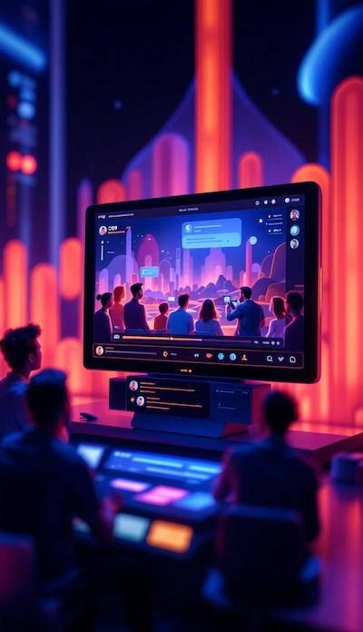
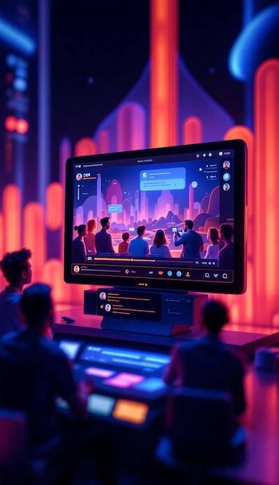

QuantalFlix'in OBS sistemi tamamen web tabanlı. Giriş yaptıktan sonra OBS'nin tüm gücünü kullanmaya başlayın. Profesyonel yayın deneyimi ve hiçbir kurulum veya güncelleme yok.
Tarayıcı Tabanlı Sistem
Anında Kullanıma Hazır
Otomatik Güncellemeler

Scenes, Sources, Filters, Audio Mixer vb. Klasik OBS'nin tüm özelliklerine ek olarak bulut özel araçlarımızla daha güçlü bir deneyim sunuyoruz.
Tüm OBS Özellikleri
Eklenti Desteği
Gelişmiş Filtreler
Nasıl Kullanırım
Güçlü bulut sunucularımız sayesinde 60 FPS'de 4K çözünürlükte yayın yapın. Bilgisayarınızın donanımı ne olursa olsun, en yüksek performansı garanti eder.
4K 60FPS Destek
Düşük Gecikme
Kararlı Performans
Teknik Detaylar
Tüm mesajlarınız otomatik olarak bulutta saklanır. Geri çekin, düzenleyin ve paylaşın. Disk alanı sınırlaması ve güvenlik sorunları yok.
Otomatik Kayıt
Sınırsız Depolama
Güvenli Bulut
EntegrasyonlarQuantalFlix Bulut OBS ile donanım sınırlarını aşmak ve her yerden profesyonel yayınlar yapmak için her yerden profesyonel yayınlar yapmak mümkündür. Giriş yapmak ve yayına basın.
Hemen Dene 

Geleneksel OBS kurulumunun getirdiği zorlukları ortadan kaldıran bulut OBS sistemi ile yayın yapmak hiç bu kadar kolay olmamıştı. Güçlü yazılımımız ve güçlü sunucularımız sayesinde profesyonel yayınlar yapın.
Sistem gereksinimlerini, kurulum sorunlarını ve performans sorunlarını ortadan kaldırın. QuantalFlix bulut OBS ile tek odak noktanız içerik olsun.
Sınırsız sahne, geçişler ve özel efektler oluşturun. Profesyonel televizyon yapım kalitesi.
Daha FazlaKroma düğmesi, gürültü azaltma, renk düzeltme ve daha fazlası. film kalitesinde efektler.
Daha Fazlagerçek zamanlı ses efektleri, çoklu ses kaynağı kontrolü ve EQ ayarlamaları. Yüksek kaliteli ses.
Daha FazlaTam ekran, pencere veya bölgesel ekran yakalama Oyun toplama için optimize edildi.
Daha FazlaÇoklu kamera desteği, yüz takipi ve otomatik odaklanma Streamlabs'ın sahip olduğu gibi özellikler.
Daha FazlaÖzelleştirilebilir kısayol tuşları ile yayınınızı kolayca yönetin. Profesyonel inceleme.
Daha Fazla50 milyondan fazla yayıncı dünya çapında OBS Studio'yu kullanıyor.
Twitch yayıncılarının %85'i, 2012 yılından beri geliştirilen OBS'yi tercih eder.
30'dan fazla video-ses filtresini destekleyen OBS, 4K 60FPS kalitesinde yayın yapabilir. Her şey tamamen ücretsizdir.
QuantalFlix ekosistemi, geliştiricilere yayınlarını daha akıllı ve etkileşimli hale getirmek için tamamen otomasyon ve entegrasyon sağlar.
Sahne geçişleri, izleyici sayısı, yayın başlatma ve durdurma, anlık istatistikler ve daha fazlasını kendi uygulamanızdan veya botunuzdan kontrol edin. API anahtarı aracılığıyla güvenli erişim Basit JSON kullanılarak hızlı entegrasyon.
Discord, YouTube, Twitch ve oyun içi sohbet botları ile hızlı bağlantı. Anlık bildirimler, otomatik moderasyon ve izleyiciyle etkileşimli oyunlar oluşturun.
Webhook kullanarak, yayın başlatıldığında, yeni izleyiciler geldiğinde veya bağış alındığında anında kendi sistemlerinize veri aktarın. Tüm kritik olayları dış uygulamalarda kullanın.
Modern bir web tarayıcısı yeterli. 4GB RAM ve temel internet bağlantısı dahil olmak üzere profesyonel yayınlar içerir.
Windows, Mac, Linux ve hatta Chromebook'tan bile kullanılabilir. Her cihaz aynı deneyime sahiptir.
Tüm bilgileriniz şifrelenir. GDPR'ye uygun güvenlik kuralları